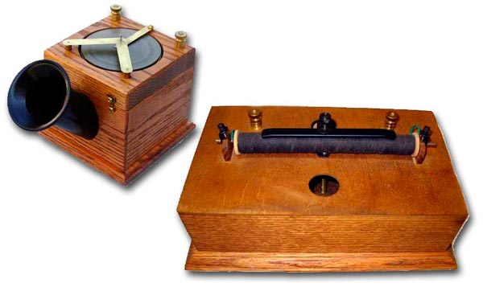
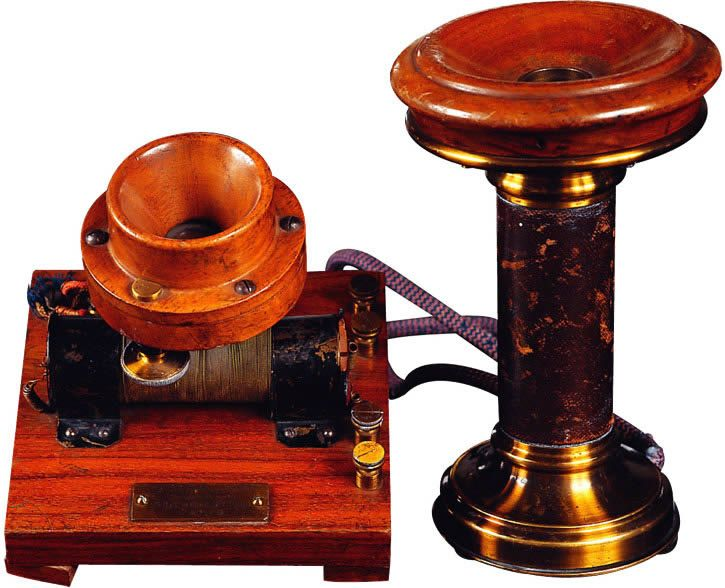
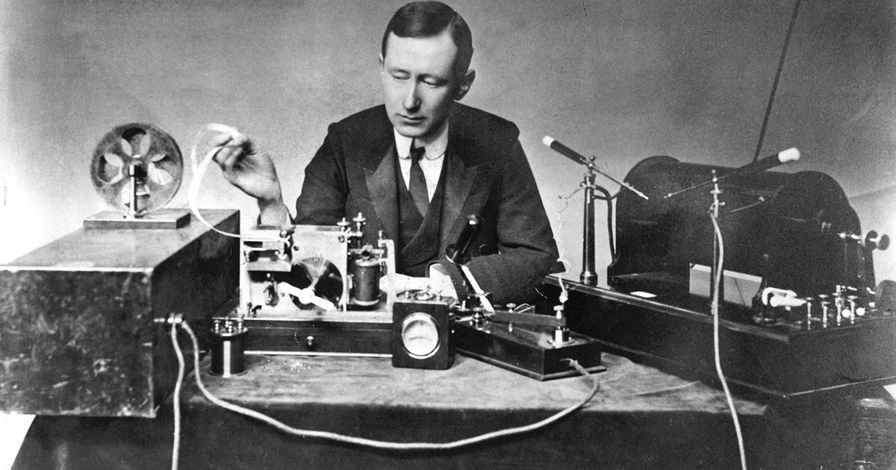
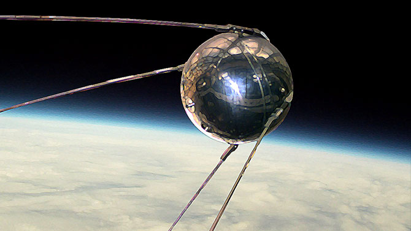
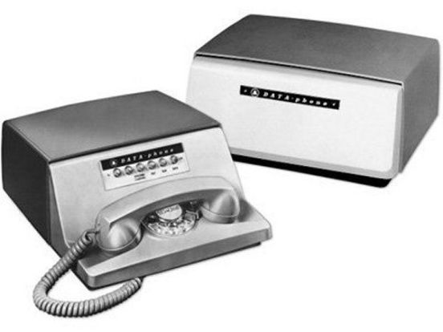
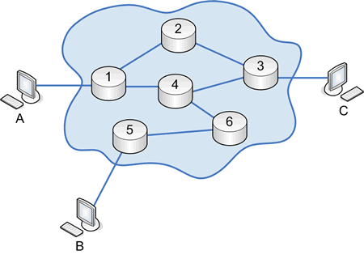
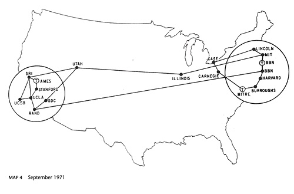
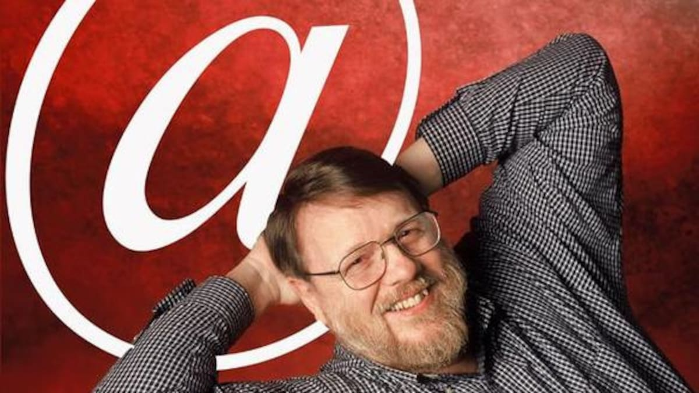
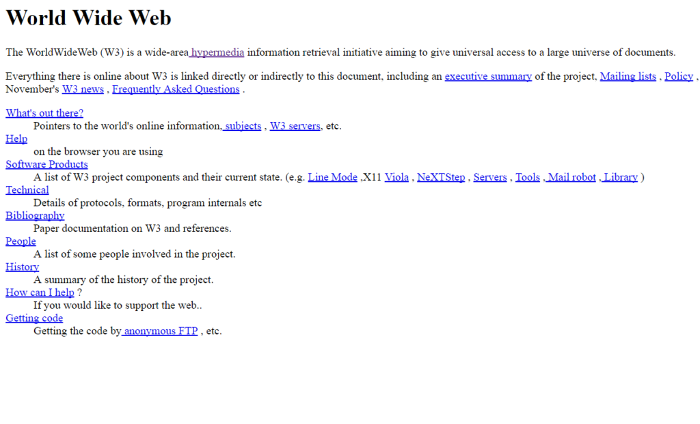
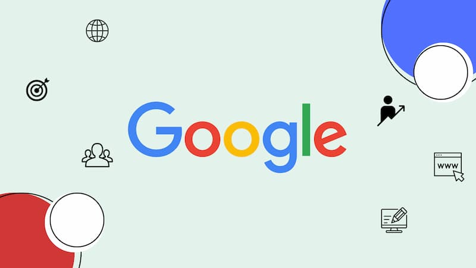

Telégrafo
Desarrolldo por Samuel Morse, presento el primer telegrafo de Morse, este mismo utilizaba un sistema de un solo cable que producia una linea similar, donde el sistema de comunicacion fue el Codigo Morse.

Cable transatlántico
Un nuevo cable telegrafico logro hacer posible la conexion entre Europa y America del Norte, donde se podia enviar un mensaje en minutos en lugar de dias.

Telefono
Alexander Graham Bell patento el telefono, donde 3 dias despues se realizo la primera llamada telefonica, citando las primeras palabras "Mr. Watson, venga aquí, quiero verle".

Radio
Guillermo Marconi contruyo el primer sistema de radio donde este aprovecha las ondas electromagneticas.

Sputnik y ARPA
La URRS lanza el primer satelite artificial, donde en respuesta crea la Agencia de Proyectos de Investigación Avanzada (ARPA).

Primer Modem
Bell Labs, desarrolla el primer modem 101 para transmitir datos en binario, donde este tambien fue el primero en utilizar la codificacion de caracteres ASCII.

Teoría de conmutación de paquetes
Leonard Kleinrock , también académico del MIT, publicó su teoría de conmutación de paquetes, donde la informacion es dividida en paquetes y es enviada por paquetes de forma mas eficiente.

ARPANET
ARPANET Nace oficialmente siendo la primera red de computadoras interconectadas, donde el primer mensaje fue "LO".

El correo electronico
Ray Tomlinson envio el primer correo electronico del mundo, donde a Ray Tomlinson se le atribuye el desarrollo del uso del símbolo @, que en su sistema inicial mostraba literalmente la ubicación del remitente.
Ethernet
Robert Metcalfe desarrolla Ethernet, el estándar para conectar computadoras en redes de área local (LAN). La primera Ethernet funcionaba a 2,94 megabits por segundo, unas 10 000 veces más rápida que las redes de terminales.

APPLE II
De la mano de la empresa recien creada APPLE creo la apple II donde esta se convitio en la computadora personal mas vendida en su tiempo.
protocolo TCP/IP
Las maquinas ARPANET adoptaron los protocolos TCP/IP, donde este punto nace el "internet" debido a que se conviritio en estandar.
Sistema de Nombres de Dominio (DNS)
Se implementa el DNS para traducir direcciones IP numéricas a nombres legibles para el usuario (humano).
World Wide Web
Tim Berners-Lee, la web se desarrolló originalmente para la demanda de intercambio automatizado de información entre científicos de universidades e institutos de todo el mundo, esto logro que se pudiera accerder a las redes mundiales conocidas.

Primera pagina Web.
Se ública la primera pagina web y el WWW se abre al publico externo a la organizacion de CERN, donde tambien nacio el protocolo HTPPS y el lenguaje HTML para las paginas Web.
Nace e-Commerce
Las restricciones comerciales hechas para controlar internet son eliminadas, esto logra la fundacion de Amazon y eBay, esto logro que se produjera la inversion y la innovacion, lo cual pudo hacer el internet actual.

Sergey Brin y Larry Page crean Google donde priorizaron una interfaz de usuario clara y un modelo de ingresos basado en publicidad dirigida, lo que los diferenció de la competencia.
Iphone
La revolucion de los smartphone inicio gracias apple, impulsando el desarrollo de las redes 3G y la experiencia tactil, transformo al internet para que se adapatara al sisma tactil.
Nacimiento de la IA
Apartir de este momento nace ChatGPT, asi como tecnologias descentralizadas, lo que impulso posteriormente la integracion de la IA en los motores de busqueda y los servicios de red cambiaran la forma de generacion de la busqueda de enlaces a generacion de respuestas .